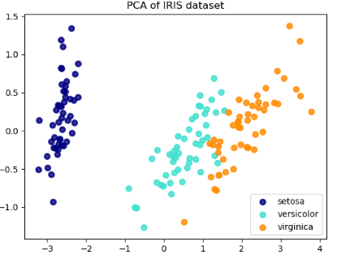

Classic Model Accuracy VS Model Interpretability Trade-off
- The Importance of XAI
- Traditional Techniques for Model Interpretation
The Importance of XAI
- Business and AI
- How can I trust your model?
- How does your model really make its decisions?
- Key Point: Model performance is not the run-time or execution performance.
- You might need to sacrifice model performance since they always do not yield the best results due to inherent problems of high bias (linear models) or high variance, leading to overfitting.
Understanding Machine Learning Model Interpretation
- Fairness: What drives model predictions?
- Accountability: Why did the model take a certain decision?
- Transparency: How can we trust model predictions?
A famous example: White Guy Problem
Traditional Techniques for Model Interpretation
- Exploratory analysis and visualization techniques:
Clustering and Dimension Reduction .etc - Model performance evaluation metrics:
Precision, Recall .etc
TSNE Visualization
Other Visualization

Limitations of Traditional Techniques
- Good at : Data, Features, model evaluation
- Limit on : Human-interpretable ways of how a model works
- Model’s performance often decreases due to variability in data features.
Business Views
Just telling the business, “I have a model with 90% accuracy” is not sufficient information for them to start trusting the model when deployed in the real world.
We need human-interpretable interpretations (HII) of a model’s decision policies which could be explained with proper and intuitive inputs and outputs.
This would enable insightful information to be easily shared with peers (analysts, managers, data scientists, data engineers).
The Accuracy vs. Interpretability Trade-off

Machine Learning
Applications and practices